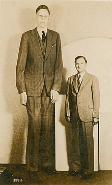
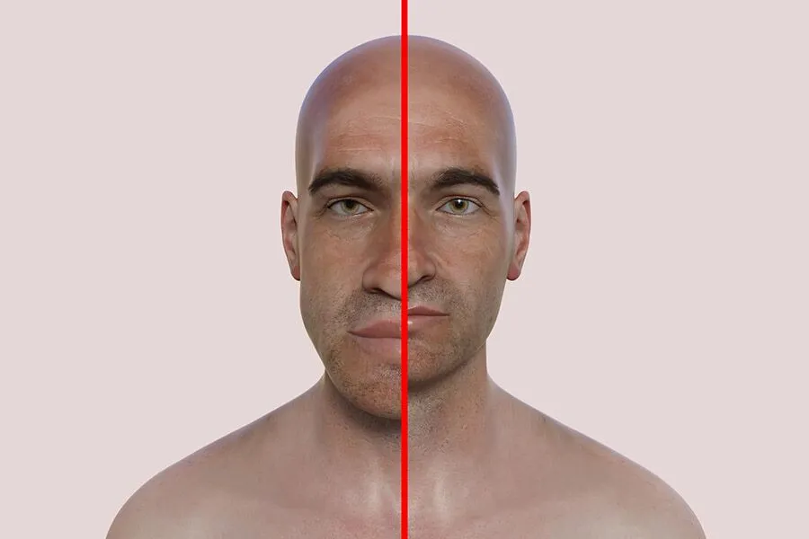

Здравни познания и хигиена на ендокринната система
Да преговорим наученото:
Задача 1: Попълнете изреченията.
Гигантизъм

- Причини - повишена секреция на човешкия растежен хормон (hGH или соматотропин) от хипофизата при деца и юноши. - Признаци - засилен ръстеж - Превенция и лечение - редовни прегледи при детски лекар и ендокринолог.
Хипофизно джудже
- Причини - намалена секреция на човешкия растежен хормон (hGH или соматотропин) от хипофизата при деца и юноши. - Признаци - изоставане в ръстежа - Превенция и лечение - редовни прегледи при детски лекар и ендокринолог.
Акромегалия

- Причини - повишена секреция на човешкия растежен хормон (hGH или соматотропин) от хипофизата при напреднала възраст поради тумор на предния дял на хипофизата. - Признаци - Увеличаване на размера на крайните части на тялото - нос, ръце ходила. - Превенция и лечение - редовни прегледи при лекар и ендокринолог.
Беззахарен диабет
- Причини - намалена секреция на антидиуретичния хормон (вазопресин). Това намалява чувствителността на бъбрека.- Признаци - отделяне на голямо количество урина, усещане за силна жажда и увеличаване на концентрацията на глюкоза в кръвта. - Превенция и лечение - редовни прегледи при лекар и ендокринолог.
Тиреоктозикоза
- Причини - повишена секреция на хормона тироксин - Признаци - изпъкване на очните ябълки, повишена нервна възбуда, намаляване на теглото- Превенция и лечение - намалена консумация на храни, съдържащи йод
Кретенизъм
- Причини - намалена секреция на хормона тироксин - Признаци - умствена изостаналост и физическото развитие- Превенция и лечение - консумация на храни, съдържащи йод, както и използване на йодирана сол
Захарен диабет
- Причини - намалена секреция на хормона инсулин от панкреаса - Признаци - увеличено съдържание на глюкоза в кръвта, увреждане на бъбреците, зрението и еритроцитите- Превенция и лечение - спиране на захарта (или намаляването ѝ), поддържане на нормално тегло и спортуване
Стрес/Дистрес
- Причини - повишена секреция на адреналин в кръвта, както и действие на стрестови фактори - Признаци - силна възбуда - ярост, страх, сърцебиене, учестено дишане, увеличено съдържание на глюкоза в кръвта и пребледняване- Превенция и лечение - умерено натоварване и почивки
Аменорея
- Причини - нарушение в женските полови хормони - Признаци - липса на менструация- Превенция и лечение - пълноценно хранене и редовни гинекологични прегледи
Спонтанен аборт
- Причини - недостатъчна секреция на прогестерон- Признаци - абортиране на плода(преждевременно раждане)- Превенция и лечение - пълноценно хранене и редовни гинекологични прегледи